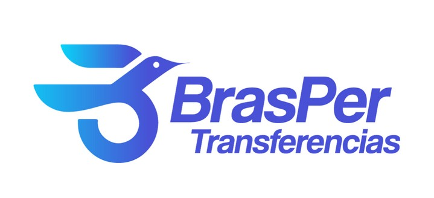
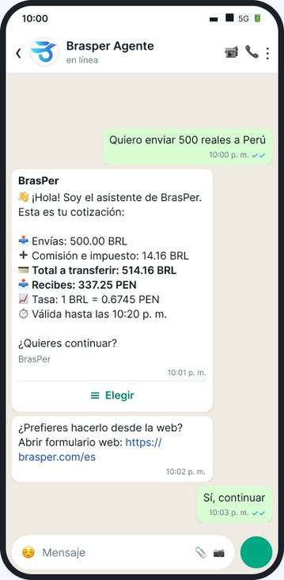
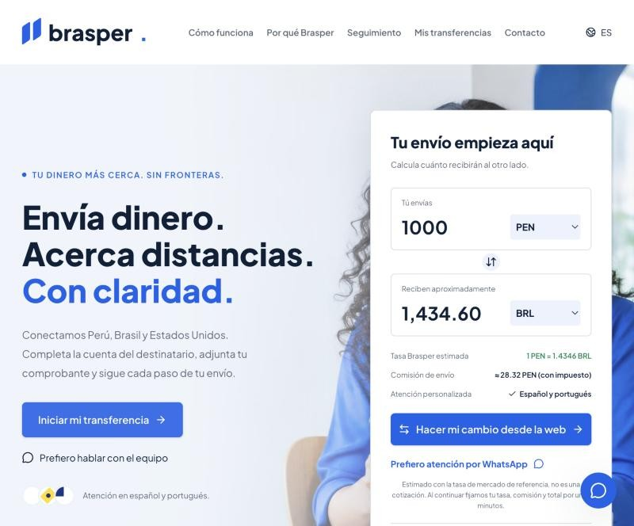
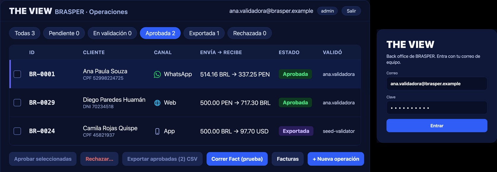
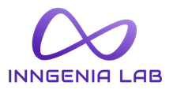
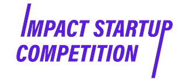
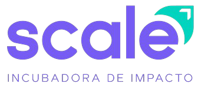
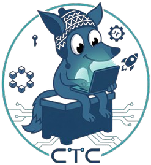
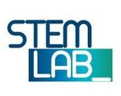
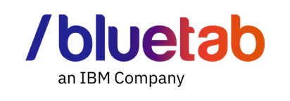

Agente conversacional
IATHON 2026 / BRASPER × 5.5
5.5
THE F*CKING 5.5
EL CAMBIO ESTÁ ABIERTO
Una operación. Más formas de llegar.
EQUIPO
CUATRO PERSONAS
UN MISMO RETO
Asistente y backend
Formulario y portal
Revisión de operaciones
Cada módulo atiende una parte
del recorrido del cliente.

01 / PROBLEMÁTICA
EL BRIEF PEDÍA FACTURAR
EL NEGOCIO PEDÍA VENDER
EL ENCARGO
Facturación y trabajo manual.
TI ya tenía su solución encaminada.
EL HALLAZGO
La mayor oportunidad estaba en ventas y en la experiencia del cliente.
Fuimos al proceso, a los chats y a los datos.
01 / PROBLEMÁTICA
64 COTIZACIONES
QUE TODAVÍA NO AVANZAN
131chats recibidos / día
67terminan en transferencia
64quedan en cotización
Entender qué les faltó. Dar seguimiento con el equipo.
Promedios informados. Seguimiento a consultas con datos disponibles y autorización. No todas son ventas recuperables.
02 / SOLUCIÓN PROPUESTA
WHATSAPP, WEB Y APP
UN REGISTRO OPERATIVO
Conversación con IA
Formulario y seguimiento
Experiencia móvil
1
registro operativo como punto de encuentro
Firebase + revisión en backoffice
Módulos del proyecto. La continuidad de identidad entre canales requiere validación.
02 / SOLUCIÓN PROPUESTA
ESCRIBE COMO HABLAS
LA IA TE ORIENTA
Entiende la intención y presenta una cotización.
LA IAConversación y orientación.
LAS REGLASImportes, datos y estados.
EL EQUIPORevisión del ingreso y excepciones.

Captura del módulo conversacional del equipo. Derivación a un asesor con contexto: siguiente iteración.
02 / SOLUCIÓN PROPUESTA
EL CLIENTE AVANZA
DESDE SU PANTALLA


01 Cotiza y registra el destino.
02 Adjunta su comprobante.
03 Consulta el estado.
02 / SOLUCIÓN PROPUESTA
MENOS DIGITACIÓN
MÁS CONTROL DEL CASO

RegistradaEn revisiónAprobadaEnvío registrado
Captura del módulo interno aportada por el equipo. Los estados no acreditan ejecución bancaria automática.
03 / IMPACTO · MÉTRICAS Y KPIs
CADA ETAPA
TIENE QUE DEJAR UN NÚMERO
| KPI | Punto de partida | Qué mediremos en el piloto |
|---|---|---|
| Conversión | 51,1% de chats | Transferencias / chats comparables |
| Tiempo por operación | Sin medición de cierre | Registro, validación y envío |
| Errores y retrabajo | Línea base pendiente | Correcciones / operaciones |
| Productividad | Plantilla: 6 ventas + 3 contabilidad | Operaciones / hora de equipo |
Base de conversión informada por Brasper. Ahorro de tiempo y reducción de errores: resultados a medir, no porcentajes ya obtenidos.
03 / IMPACTO · GANANCIA PROYECTADA
TU PRÓXIMO CLIENTE
NO ESPERA A MAÑANA
24/7
para recibir intención de compra.
Más canales y una experiencia que da claridad.
3entradas: WhatsApp, web y app
64 / díacotizaciones para investigar y acompañar
Potencial por medir: nueva demanda, conversión y seguimiento. Registrar motivos y contactos autorizados; revisión humana con horario.
03 / IMPACTO · CAPACIDAD OPERATIVA
S/109.200
AL AÑO DE AHORRO OPERATIVO POTENCIAL
6 a 3ventas · dedicación operativa equivalente
3 a 1contabilidad · dedicación operativa equivalente
S/9.100valor mensual del tiempo y capacidad liberados
Más capacidad para captar, capacitar y hacer seguimiento.
Equivalente salarial bruto del escenario, no ahorro de caja ejecutado. Reasignar tiempo a otras tareas. Antes de tecnología, cargas y transición.
03 / IMPACTO · COSTO-BENEFICIO
CUÁNTO CUESTA
Y QUÉ PODRÍA DEVOLVER
Desarrollo e integración como aporte del equipo al concurso.
Web, bot, IA y Firebase. Incluye reserva.
Noche + seguimiento. Hipótesis antes de campañas.
20 operaciones
adicionales cubren S/300 de tecnología
con M = S/15. El crecimiento se valida en el piloto.
Escenario: 192 recuperadas + 60 nocturnas, distintas, × S/15. Restar tecnología y campañas. Puesta en marcha incluida en el concurso. Hipótesis, no resultado.
04 / DEMO
65″
Canales, registro y revisión interna.
Recorrido técnico aportado por el equipo.
PRÓXIMOS PASOS
EL SIGUIENTE PASO
ES VENDER CON MÁS CONTEXTO
Pasar de la IA a un asesor con contexto.
Resolver excepciones sin repetir el caso.Entender por qué no compraron y volver a acompañarlos.
Probar campañas y cupones, midiendo margen.Evaluar un banco o fintech para conciliar y pagar.
Automatización sujeta a controles.Primero medir el piloto. Después ampliar lo que funcione.
Hoja de ruta. Flow nativo sujeto a Meta. Continuidad de identidad y módulos por validar.
CIERRE
QUE LLEGUEN
QUE AVANCEN
QUE VUELVAN
OMNI by 5.5
WhatsApp + web + app. Un proceso que se puede medir.
AGRADECIMIENTOS
GRACIAS
ORGANIZAN

SPONSORS Y ALIADOS





ANEXO A / IMPACTO COMERCIAL
64 CONSULTAS
UNA HIPÓTESIS POR PROBAR
10%recuperación hipotética
192operaciones / 30 días
S/2.880con M = S/15, antes de costos
El equipo hace seguimiento. Las campañas deben dejar margen.
64 × 10% × 30. S/2.880 por seguimiento + S/900 nocturno = S/3.780 si no se solapan. Restar costos y cupones. Hipótesis a validar.
Volver a la oportunidadANEXO B / ALCANCE
EL REGISTRO PERMITE MEDIR
LA INTEGRACIÓN SE VALIDA
ENTREGA WEB REVISADA
Cotización y registro sobre Firebase.
Adjunto y seguimiento por estado.
Sesión anónima en el navegador.
AMPLIACIONES
Identidad compartida y CRM.
Flow nativo y recuperación.
Pago bancario automático.
El video ilustra el conjunto modular con datos de presentación. No certifica emisión fiscal, liquidación bancaria ni continuidad entre dispositivos.
Volver al pilotoANEXO C / FUENTES
DATOS, CAPTURAS
Y SUPUESTOS A LA VISTA
WhatsApp y Facebook131 chats, 67 transferencias, 64 cotizaciones por día. Promedios informados.
Transferencias SQL3.723 registros en el período observado. Última modificación no equivale al cierre.
Material del equipoCapturas, video, nombres y logos del PDF aportado.
Modelo económicoPlantilla 6 + 3. Sueldos y demanda fuera de horario son supuestos.
ANEXO D / PRÓXIMOS PASOS
QUÉ MÁS PODEMOS HACER
Y PARA QUÉ
| Ampliación | Valor esperado | Condición |
|---|---|---|
| Bot + asesor humano | Continuar casos complejos con contexto | Bandeja, responsables y tiempos de atención |
| CRM + seguimiento con IA | Entender y probar recuperación | Motivos, consentimiento y medición |
| Alertas de cotización | Acompañar intención de compra | Reglas, vigencia y autorización |
| Flow nativo | Recoger datos dentro de WhatsApp | Habilitación de Meta y endpoint |
| Banco o fintech | Conciliar y ampliar automatización | API, contrato y controles |
ANEXO E / COSTOS TECNOLÓGICOS
EL PRESUPUESTO
TIENE DESGLOSE
| Recurso | USD / mes | PEN / mes |
|---|---|---|
| Lovable Pro | 25,00 | 95,00 |
| VPS del bot + backup | 14,40 | 54,72 |
| Firebase · provisión | 15,00 | 57,00 |
| IA · tokens y 10% de reserva | 9,68 | 36,78 |
| Subtotal + 20% general | 76,896 | 292,20 |
Presupuesto: S/300 al mes · Expo Free y dominio existente.
Volver al costo-beneficioPrecios revisados 15/10/2026. TC modelo S/3,80. Provisiones y carga por validar. Fuentes y fórmula en COSTOS_TECNOLOGICOS.md.